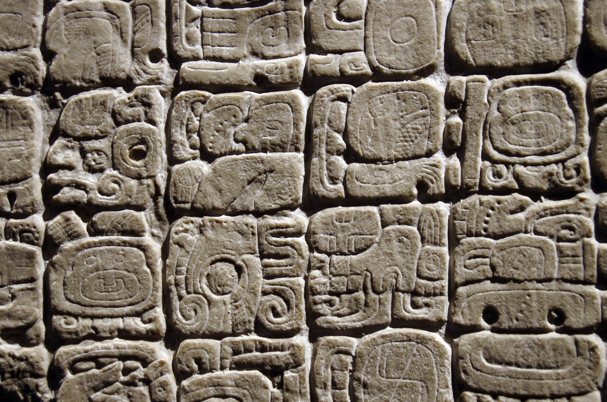

Sistema de Escritura Maya

Ejemplo de jeroglíficos mayas grabados en piedra en Chichén Itzá.
Introducción
La escritura maya es uno de los sistemas de escritura más complejos y antiguos de Mesoamérica. Desarrollada por la civilización maya entre el siglo III a.C. y el siglo XVI d.C., consta de más de 800 glifos que combinan elementos fonéticos y logográficos.
Características del Sistema
El sistema jeroglífico maya es **logosilábico**, lo que significa que utiliza tanto logogramas (símbolos que representan palabras completas) como sílabas (símbolos que representan sonidos). Los glifos se escribían de izquierda a derecha y de arriba hacia abajo en columnas.
Historia y Desarrollo
La escritura maya se originó alrededor del siglo III a.C. en la región de los Olmecas, pero alcanzó su apogeo durante el Período Clásico (250-900 d.C.). Se utilizaba principalmente para registrar eventos históricos, rituales religiosos, genealogías y cálculos astronómicos.
Ejemplos de Glifos
Algunos glifos comunes incluyen:
- AJAW: Representa al "señor" o "rey".
- K'IN: Significa "día" o "sol".
- CH'EN: Representa "cielo" o "ciudad".
Desciframiento Moderno
El desciframiento de la escritura maya comenzó en el siglo XIX con exploradores como John Lloyd Stephens. Avances significativos ocurrieron en el siglo XX gracias a lingüistas como Yuri Knorozov, quien demostró que el sistema incluía elementos fonéticos.
← Volver al principal